1.The device is not a POE switch. It is a Gigabit network switch. Please confirm carefully before buying. thank you！
2. EU Plug is sent by default, if you need other plug types, you must contact shop customer service before purchase.
5 Ports Gigabit Network Switch
RJ45 Port:5*10/100/1000M(Auto MDI/MDIX)
AC In: 100V-240V 50HZDC Out: 5V 1A(External power adapter)
Bandwidth:10G full duplex
Data Pin:12 36 45 78
Distance:100 Meters
MAC Address:2K
Agreement:IEEE802.3u,IEE 802.3x
8 Ports Gigabit Network Switch
RJ45 Port:8*10/1001000M(Auto MDI/MDIX)
AC In: 100V-240V 50HZDC Out: 5V 1A(External power adapter)
Bandwidth:16G full duplex
Data Pin:12 36 45 78
Distance:100 Meters
MAC Address:2K
Agreement:IEEE802.3u,IEE 802.3x
10 Ports Gigabit Network Switch
RJ45 Port:10*10/1001000M(Auto MDI/MDIX)
AC In: 100V-240V 50HZDC Out: 5V 1A(External power adapter)
Bandwidth:20G full duplex
Data Pin:12 36 45 78
Distance:100 Meters
MAC Address:2K
Agreement:IEEE802.3u,IEE 802.3x
FAQ:
Q1: After the computer is directly connected to the rou-ter, the Internet can be accessed normally, but the computer cannot access the Internet when it is connected to the rou-ter through the network switch?
A1: After connecting to the network switch, the computer cannot access the Internet. The reasons for this may include: unstable physical connection, improper computer settings, etc. Please follow the steps below to eliminate:
1) Replace the network cable between the computer and the switch to ensure that the corresponding indicator light of the switch is on and the local connection is stable. Checking method: Connect two computers to the switch and set them on the same network segment. If they can ping each other, the connection between the computers and the switch is stable.
2) Set the computer's local connection to obtain IP automatically (provided that the front-end rou-ter enables the DHCP server), right-click the local connection properties, select Internet Protocol (TCP/IP), and click the Properties button.
3) Check "Obtain an IP address automatically", then OK.
4) When the computer obtains the IP normally, it can surf the Internet normally.
5) If you still cannot access the Internet after obtaining it normally, please check the relevant settings of the front-end rou-ter to see if the computer is blocked from accessing the Internet.
6) If the IP address cannot be obtained normally, replace the network cable between the switch and the rou-ter.
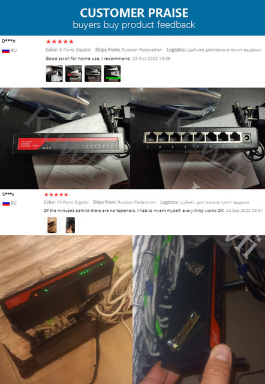
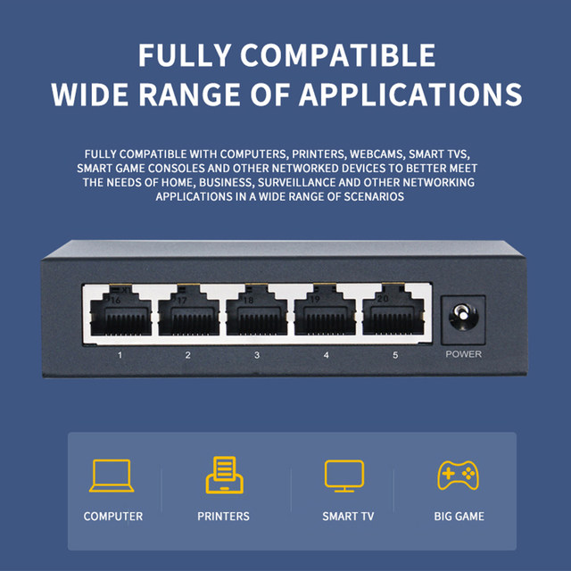
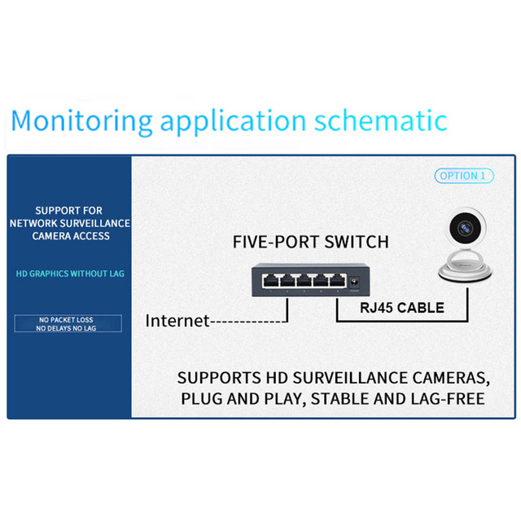
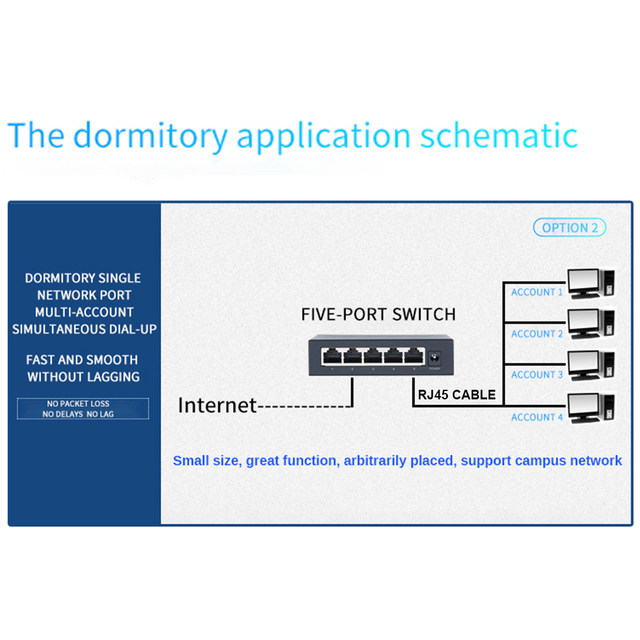
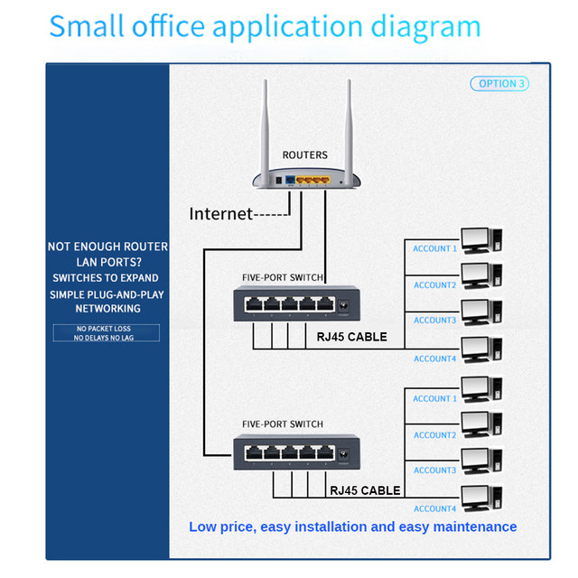
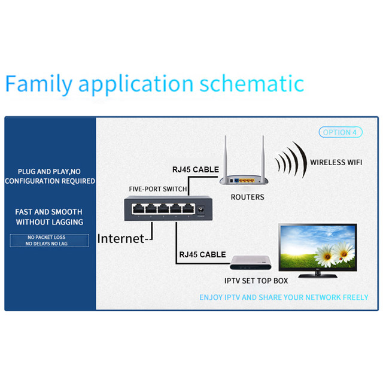
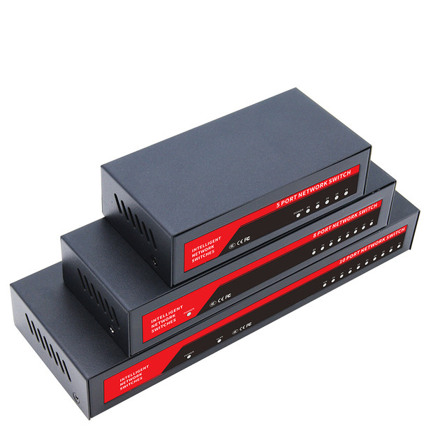
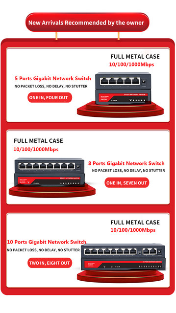
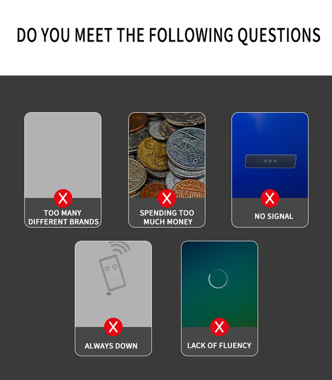
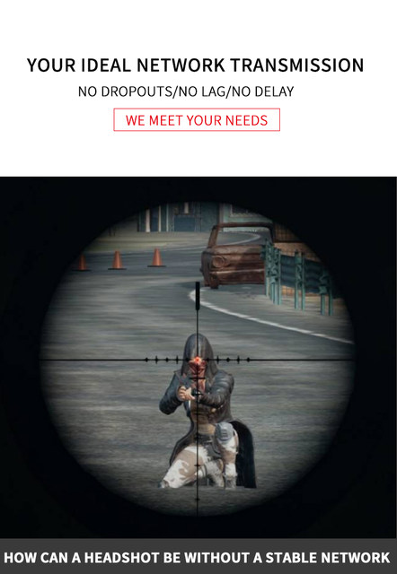
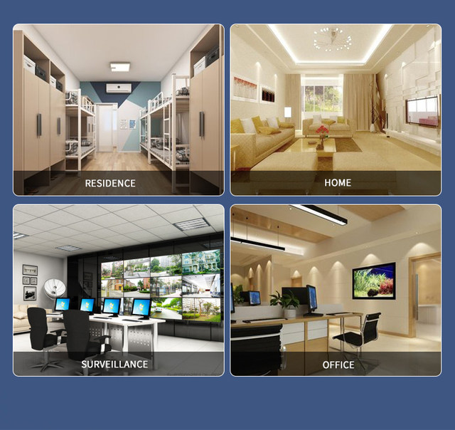
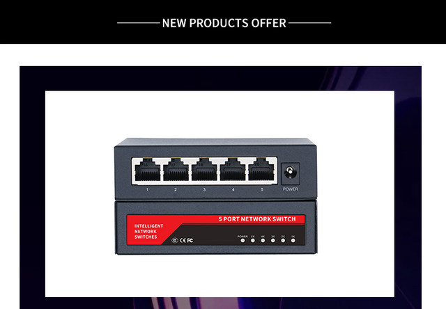
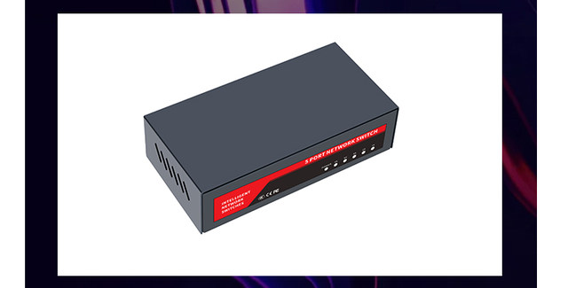
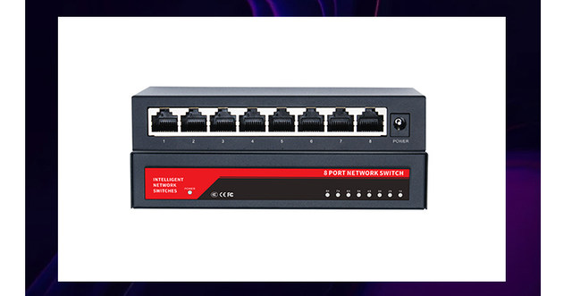
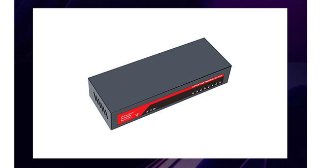
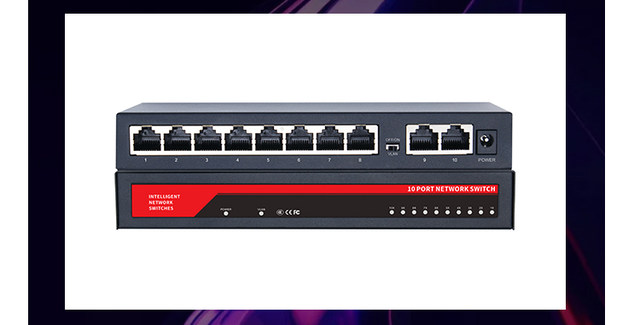
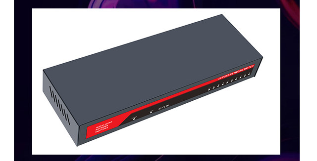
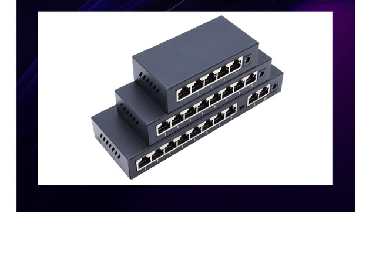
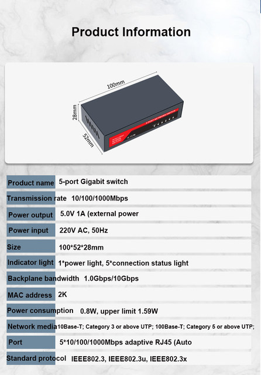
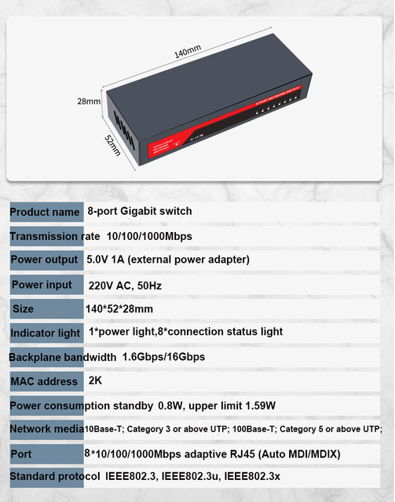
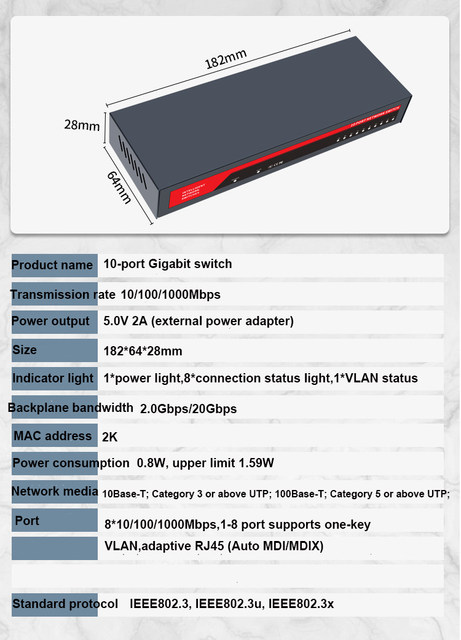
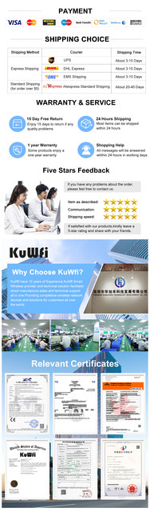